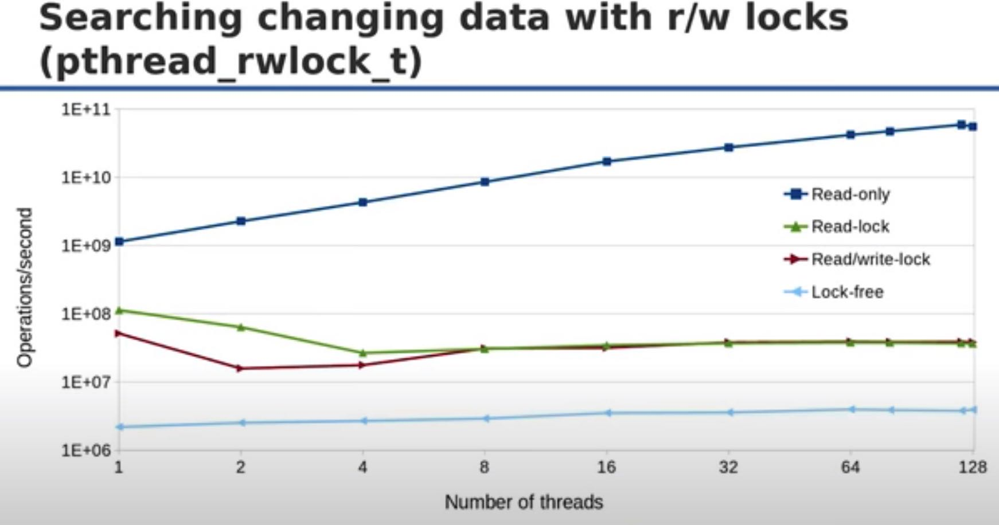
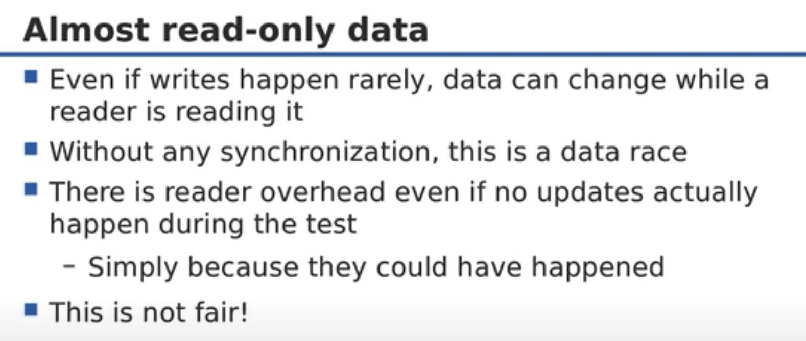
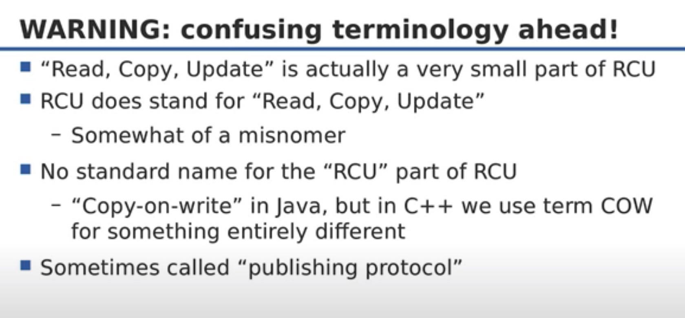
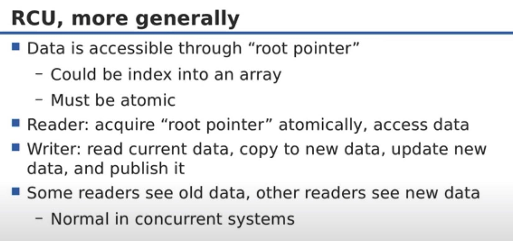
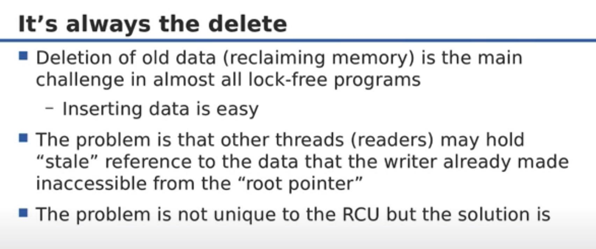
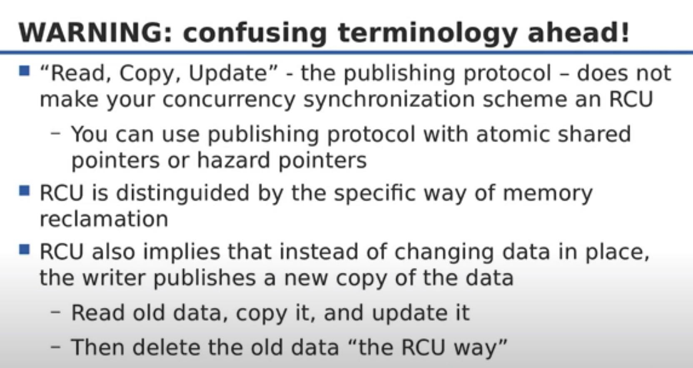
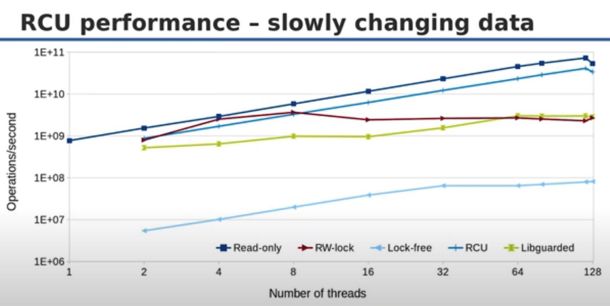
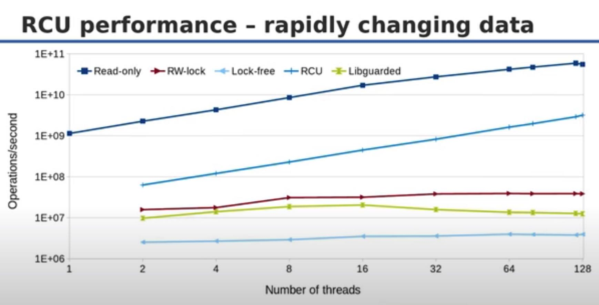
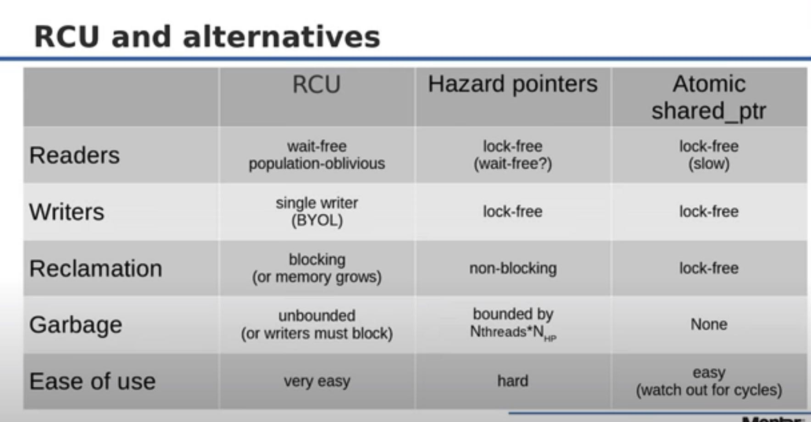

CppCon 2017: Fedor Pikus “Read, Copy, Update, then what? RCU for non-kernel programmers”
read/write lock性能上存在一些问题，reader性能在没有writer和一个writer情况下几乎是相同的，没有办法做到linear scale, 而read-only却可以做到linear scale. 这就有个问题是，我们为了可能偶尔出现的update, 而需要付出巨大的性能损失。


Read/Copy/Update仅仅是RCU的部分. Read/Copy/Update是一套发布协议，类似于COW. 不过这套发布协议没有办法很好地解决内存回收/节点删除这类问题，而这个才是RCU真正精髓的地方。




这个地方开始具体讲解RCU如何处理删除数据 https://youtu.be/rxQ5K9lo034?t=1525 解决方式则是使用epoch + 引用计数，根据下面的逻辑可以做更多的实现上优化。
reader执行逻辑是：
- get current epoch/generation number like `cg`
- rcu_read_lock 在 `cg` 这个 epoch上增加引用计数
- 根据 `cg` 得到关联的 root pointer.
- rcu_read_unlock 在 `cg` 这个 epoch上减少引用计数
writer执行逻辑是：
- create new epoch/generation number like `cg`
- 等待上次gc epoch number到达cg，期间不断检查每个中间的epoch引用计数是否为0 `synchronize_rcu`
- 如果某个epoch引用计数为0，那么就释放这个epoch对应的root pointer
- 将新的root pointer和这个 `cg` 关联起来
对于少量的writer, RCU相比read-only数据结构稍微差些，但是比rw-lock要好多了；而对于大量的writer，比read-only就要差多了，但是比rw-lock等结构依然要好很多。我理解RCU最大的问题就是因为为了追求低延迟，所以并没有同步地等待GC，所以造成memory footprint会稍大一些。


RCU和其他几个数据结构对比
